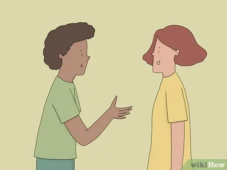
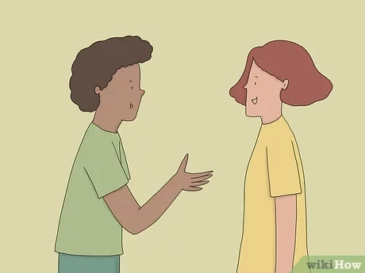

1.Melakukan kuesioner dengan bertanya secara langsung
2.Mengisi kuesioner menggunakan alat teknologi

3.Mengisi kuesioner dengan ditulis dikertas
Kegiatan kuesioner dapat dilakukan dengan menanyakan langsung kepada seseorang atau kelompok dan dapat di buat dan dikirimkan melalui media sosial
1.Melakukan kuesioner dengan bertanya secara langsung
2.Mengisi kuesioner menggunakan alat teknologi
3.Mengisi kuesioner dengan ditulis dikertas